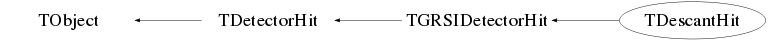

class TDescantHit: public TGRSIDetectorHit
Function Members (Methods)
public:
| virtual | ~TDescantHit() |
| void | TObject::AbstractMethod(const char* method) const |
| virtual void | TDetectorHit::Add(const TDetectorHit*) |
| void | TDetectorHit::AddWaveformSample(const Short_t& x) |
| bool | AnalyzeWaveform() |
| virtual void | TObject::AppendPad(Option_t* option = "") |
| virtual void | TDetectorHit::AppendTimeStamp(const Long64_t& x) |
| virtual void | TObject::Browse(TBrowser* b) |
| Int_t | CalculateCfd(double attenuation, unsigned int delay, int halfsmoothingwindow, unsigned int interpolation_steps) |
| Int_t | CalculateCfdAndMonitor(double attenuation, unsigned int delay, int halfSmoothingWindow, unsigned int interpolationSteps, vector<Short_t>& monitor) |
| vector<Short_t> | CalculateCfdMonitor(double attenuation, unsigned int delay, unsigned int halfSmoothingWindow) |
| vector<Int_t> | CalculatePartialSum() |
| Int_t | CalculatePsd(double fraction, unsigned int interpolationSteps) |
| Int_t | CalculatePsdAndPartialSums(double fraction, unsigned int interpolationSteps, vector<Int_t>& partialSums) |
| vector<Short_t> | CalculateSmoothedWaveform(unsigned int halfSmoothingWindow) |
| virtual Float_t | TDetectorHit::Charge() const |
| ULong_t | TObject::CheckedHash() |
| static TClass* | Class() |
| virtual const char* | TObject::ClassName() const |
| virtual void | Clear(Option_t* opt = "") |
| void | TDetectorHit::ClearChannel() |
| void | TDetectorHit::ClearEnergy() |
| virtual void | TDetectorHit::ClearTransients() const |
| virtual TObject* | TObject::Clone(const char* newname = "") const |
| virtual Int_t | TObject::Compare(const TObject* obj) const |
| static bool | TDetectorHit::CompareEnergy(TDetectorHit* lhs, TDetectorHit* rhs) |
| virtual void | Copy(TObject&) const |
| virtual void | Copy(TObject&, bool) const |
| virtual void | TDetectorHit::CopyWave(TObject&) const |
| virtual void | TObject::Delete(Option_t* option = "")MENU |
| virtual Int_t | TObject::DistancetoPrimitive(Int_t px, Int_t py) |
| virtual void | TObject::Draw(Option_t* option = "") |
| virtual void | TObject::DrawClass() constMENU |
| virtual TObject* | TObject::DrawClone(Option_t* option = "") constMENU |
| virtual void | TObject::Dump() constMENU |
| virtual void | TObject::Error(const char* method, const char* msgfmt) const |
| virtual void | TObject::Execute(const char* method, const char* params, Int_t* error = 0) |
| virtual void | TObject::Execute(TMethod* method, TObjArray* params, Int_t* error = 0) |
| virtual void | TObject::ExecuteEvent(Int_t event, Int_t px, Int_t py) |
| virtual void | TObject::Fatal(const char* method, const char* msgfmt) const |
| virtual TObject* | TObject::FindObject(const char* name) const |
| virtual TObject* | TObject::FindObject(const TObject* obj) const |
| virtual UInt_t | TDetectorHit::GetAddress() const |
| virtual UShort_t | TDetectorHit::GetArrayNumber() const |
| static TVector3* | TDetectorHit::GetBeamDirection() |
| Int_t | GetCcLong() |
| Int_t | GetCcShort() |
| virtual Float_t | GetCfd() const |
| vector<short>& | GetCfdMonitor() |
| TChannel* | TDetectorHit::GetChannel() const |
| virtual Float_t | TDetectorHit::GetCharge() const |
| virtual Int_t | TDetectorHit::GetCrystal() const |
| Long64_t | TDetectorHit::GetCycleTimeStamp() const |
| virtual Int_t | TDetectorHit::GetDetector() const |
| virtual Option_t* | TObject::GetDrawOption() const |
| static Long_t | TObject::GetDtorOnly() |
| virtual double | TDetectorHit::GetEnergy(Option_t* opt = "") const |
| virtual Double_t | TDetectorHit::GetEnergyNonlinearity(double) const |
| Int_t | GetFilterPattern() |
| virtual const char* | TObject::GetIconName() const |
| virtual Short_t | TDetectorHit::GetKValue() const |
| virtual const char* | TDetectorHit::GetName() const |
| virtual char* | TObject::GetObjectInfo(Int_t px, Int_t py) const |
| static Bool_t | TObject::GetObjectStat() |
| virtual Option_t* | TObject::GetOption() const |
| vector<int>& | GetPartialSum() |
| virtual TVector3 | GetPosition() const |
| virtual TVector3 | GetPosition(Double_t dist) const |
| EPpgPattern | TDetectorHit::GetPPGStatus() const |
| Int_t | GetPsd() |
| Long64_t | TDetectorHit::GetRawTimeStamp(Option_t* = "") const |
| Int_t | GetRemainder() const |
| virtual Int_t | TDetectorHit::GetSegment() const |
| virtual Double_t | TGRSIDetectorHit::GetTime(const TDetectorHit::ETimeFlag& correct_flag = ETimeFlag::kAll, Option_t* opt = "") const |
| double | TDetectorHit::GetTimeSinceTapeMove() const |
| virtual Long64_t | TDetectorHit::GetTimeStamp(Option_t* opt = "") const |
| virtual Int_t | TDetectorHit::GetTimeStampUnit() const |
| virtual const char* | TObject::GetTitle() const |
| virtual UInt_t | TObject::GetUniqueID() const |
| const vector<Short_t>* | TDetectorHit::GetWaveform() const |
| Int_t | GetZc() |
| virtual Bool_t | TObject::HandleTimer(TTimer* timer) |
| virtual ULong_t | TObject::Hash() const |
| Bool_t | TObject::HasInconsistentHash() const |
| virtual bool | TDetectorHit::HasWave() const |
| bool | InFilter(Int_t) |
| virtual void | TObject::Info(const char* method, const char* msgfmt) const |
| virtual Bool_t | TObject::InheritsFrom(const char* classname) const |
| virtual Bool_t | TObject::InheritsFrom(const TClass* cl) const |
| virtual void | TObject::Inspect() constMENU |
| void | TObject::InvertBit(UInt_t f) |
| virtual TClass* | IsA() const |
| virtual Bool_t | TObject::IsEqual(const TObject* obj) const |
| virtual Bool_t | TObject::IsFolder() const |
| Bool_t | TObject::IsOnHeap() const |
| virtual Bool_t | TObject::IsSortable() const |
| Bool_t | TObject::IsZombie() const |
| virtual void | TObject::ls(Option_t* option = "") const |
| void | TObject::MayNotUse(const char* method) const |
| virtual Bool_t | TObject::Notify() |
| void | TObject::Obsolete(const char* method, const char* asOfVers, const char* removedFromVers) const |
| void | TObject::operator delete(void* ptr) |
| void | TObject::operator delete(void* ptr, void* vp) |
| void | TObject::operator delete[](void* ptr) |
| void | TObject::operator delete[](void* ptr, void* vp) |
| void* | TObject::operator new(size_t sz) |
| void* | TObject::operator new(size_t sz, void* vp) |
| void* | TObject::operator new[](size_t sz) |
| void* | TObject::operator new[](size_t sz, void* vp) |
| bool | TDetectorHit::operator<(const TDetectorHit& rhs) const |
| TDescantHit& | operator=(const TDescantHit&) |
| virtual void | TObject::Paint(Option_t* option = "") |
| virtual void | TObject::Pop() |
| virtual void | Print(Option_t* opt = "") const |
| virtual Int_t | TObject::Read(const char* name) |
| virtual void | TObject::RecursiveRemove(TObject* obj) |
| void | TObject::ResetBit(UInt_t f) |
| virtual void | TObject::SaveAs(const char* filename = "", Option_t* option = "") constMENU |
| virtual void | TObject::SavePrimitive(ostream& out, Option_t* option = "") |
| void | TDetectorHit::SetAddress(const UInt_t& temp_address) |
| void | TObject::SetBit(UInt_t f) |
| void | TObject::SetBit(UInt_t f, Bool_t set) |
| void | SetCcLong(const int& x) |
| void | SetCcShort(const int& x) |
| virtual void | TDetectorHit::SetCfd(const Float_t& x) |
| virtual void | TDetectorHit::SetCfd(const uint32_t& x) |
| virtual void | TDetectorHit::SetCfd(const Int_t& x) |
| void | TDetectorHit::SetCharge(const Float_t& temp_charge) |
| void | TDetectorHit::SetCharge(const Int_t& temp_charge) |
| virtual void | TObject::SetDrawOption(Option_t* option = "")MENU |
| static void | TObject::SetDtorOnly(void* obj) |
| Double_t | TDetectorHit::SetEnergy(const double& en) const |
| void | SetFilterPattern(const int& x) |
| void | TDetectorHit::SetHitBit(TDetectorHit::EBitFlag, Bool_t set = true) const |
| void | TDetectorHit::SetKValue(const Short_t& temp_kval) |
| static void | TObject::SetObjectStat(Bool_t stat) |
| static void | TDetectorHit::SetPPGPtr(TPPG* ptr) |
| void | SetPsd(const int& x) |
| Double_t | TDetectorHit::SetTime(const Double_t& time) const |
| virtual void | TDetectorHit::SetTimeStamp(const Long64_t& x) |
| virtual void | TObject::SetUniqueID(UInt_t uid) |
| void | TDetectorHit::SetWaveform(const vector<Short_t>& x) |
| void | SetZc(const int& x) |
| virtual void | ShowMembers(TMemberInspector& insp) const |
| virtual void | Streamer(TBuffer&) |
| void | StreamerNVirtual(TBuffer& ClassDef_StreamerNVirtual_b) |
| virtual void | TObject::SysError(const char* method, const char* msgfmt) const |
| TDescantHit() | |
| TDescantHit(const TDescantHit&) | |
| TDescantHit(const TFragment& frag) | |
| Bool_t | TObject::TestBit(UInt_t f) const |
| Int_t | TObject::TestBits(UInt_t f) const |
| bool | TDetectorHit::TestHitBit(TDetectorHit::EBitFlag flag) const |
| virtual void | TObject::UseCurrentStyle() |
| virtual void | TObject::Warning(const char* method, const char* msgfmt) const |
| virtual Int_t | TObject::Write(const char* name = 0, Int_t option = 0, Int_t bufsize = 0) |
| virtual Int_t | TObject::Write(const char* name = 0, Int_t option = 0, Int_t bufsize = 0) const |
protected:
| virtual void | TObject::DoError(int level, const char* location, const char* fmt, va_list va) const |
| Bool_t | TDetectorHit::IsChannelSet() const |
| Bool_t | TDetectorHit::IsEnergySet() const |
| Bool_t | TDetectorHit::IsPPGSet() const |
| Bool_t | TDetectorHit::IsTimeSet() const |
| void | TObject::MakeZombie() |
private:
| virtual Bool_t | CheckTObjectHashConsistency() const |
| Double_t | GetDefaultDistance() const |
Data Members
public:
| static TObject::(anonymous) | TObject::kBitMask | |
| static TObject::EStatusBits | TObject::kCanDelete | |
| static TObject::EStatusBits | TObject::kCannotPick | |
| static TObject::EStatusBits | TObject::kHasUUID | |
| static TObject::(anonymous) | TObject::kInconsistent | |
| static TObject::EStatusBits | TObject::kInvalidObject | |
| static TObject::(anonymous) | TObject::kIsOnHeap | |
| static TObject::EStatusBits | TObject::kIsReferenced | |
| static TObject::EStatusBits | TObject::kMustCleanup | |
| static TObject::EStatusBits | TObject::kNoContextMenu | |
| static TObject::(anonymous) | TObject::kNotDeleted | |
| static TObject::EDeprecatedStatusBits | TObject::kObjInCanvas | |
| static TObject::(anonymous) | TObject::kOverwrite | |
| static TObject::(anonymous) | TObject::kSingleKey | |
| static TObject::(anonymous) | TObject::kWriteDelete | |
| static TObject::(anonymous) | TObject::kZombie |
protected:
| UInt_t | TDetectorHit::fAddress | address of the the channel in the DAQ. |
| static TVector3 | TDetectorHit::fBeamDirection | ! |
| TTransientBits<UChar_t> | TDetectorHit::fBitFlags | |
| Float_t | TDetectorHit::fCfd | CFD time of the Hit |
| Float_t | TDetectorHit::fCharge | charge collected from the hit |
| Short_t | TDetectorHit::fKValue | integration value. |
| static TPPG* | TDetectorHit::fPPG | |
| Double_t | TDetectorHit::fTime | ! Calibrated Time of the hit |
| Long64_t | TDetectorHit::fTimeStamp | Timestamp given to hit in ns |
| vector<Short_t> | TDetectorHit::fWaveform |
Class Charts



Function documentation
TDescantHit(const TDescantHit& )
TDescantHit(const TFragment& frag)
TVector3 GetPosition() const
Float_t GetCfd() const
special function for TDescantHit to return CFD after mapping out the high bits which are the remainder between the 125 MHz data and the 100 MHz timestamp clock
Int_t GetRemainder() const
returns the remainder between 100 MHz/10ns timestamp and 125 MHz/8 ns data in ns
bool AnalyzeWaveform()
Int_t CalculateCfd(double attenuation, unsigned int delay, int halfsmoothingwindow, unsigned int interpolation_steps)
Int_t CalculateCfdAndMonitor(double attenuation, unsigned int delay, int halfSmoothingWindow, unsigned int interpolationSteps, vector<Short_t>& monitor)
std::vector<Short_t> CalculateSmoothedWaveform(unsigned int halfSmoothingWindow)
std::vector<Short_t> CalculateCfdMonitor(double attenuation, unsigned int delay, unsigned int halfSmoothingWindow)
std::vector<Int_t> CalculatePartialSum()
Int_t CalculatePsd(double fraction, unsigned int interpolationSteps)
Int_t CalculatePsdAndPartialSums(double fraction, unsigned int interpolationSteps, vector<Int_t>& partialSums)
Int_t GetFilterPattern()
4G 26bit CFD word: 4 bit timestamp remainder, 22 bit actual cfd word inline void SetCfd(const Int_t& x) { fCfd = (fCfd & 0x70000000) | (x & 0x1fffffff); } //!<!
{ return fFilter; }